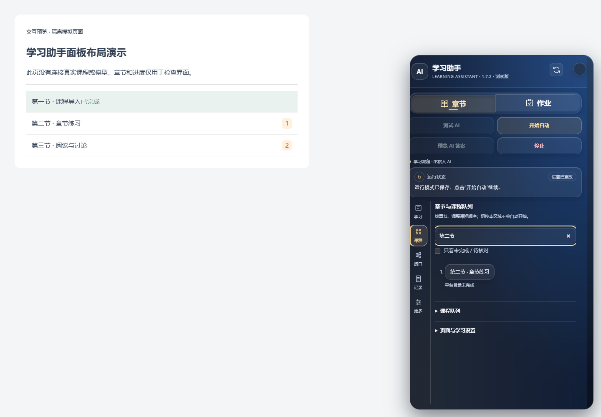

只学当前这门课
打开一条具体小节，点开始自动。脚本按当前页面的任务和原生导航接续，不要求先设置多课程队列。
课程首页、目录页和具体小节是三个位置。学习面板在具体小节里；目录旁的黑体大章通常只是分组，不是可以开始学习的小节。
本课原生“下一节”缺失或未生效时，脚本会回查同课目录，至多尝试一次唯一可用的相邻小节。小节锁定或归属不明确时，请手动接续。如果已完成当前任务，却出现“平台未切换到下一节，请手动导航”，说明导航没有被确认。处理方法见不切下一节。
安排多门课程
- 回到学习通个人空间，打开平台的“课程”栏目。
- 找到脚本自己的学习助手 · 课程队列浮窗。
- 在这个浮窗的课程列表里勾选，用“上移”“下移”调整顺序。
- 点开始所选课程，在当前标签继续。进入课程总目录后，脚本会打开已识别的原生小节；如果提示暂停，请手动打开小节，再在「课程 → 课程队列」点「继续队列」。
要勾选的是助手浮窗里的课程。直接点击平台原生课程名称，通常会打开课程，不会自动把它加入队列。
浮窗列表为空时，可点“打开课程列表”进入平台已有入口。继续队列前，先确认曾经建过队列。浮窗分为选课、队列和设置，外观随主面板主题变化。
队列为什么会暂停
队列绑定创建时的浏览器标签和当前账号，保存的有效期为 12 小时。更换账号、课程身份无法匹配、入口变化、过期、人工验证等情况会暂停，防止进入错误课程。
未建队列、账号不匹配、记录过期或损坏等情况各有提示。点“继续队列”后，脚本先等队列状态保存确认；等待期间主动停止，队列会保持停止。
进入下一门课前，脚本需要看到目录各小节明确的完成标记。未知、未加载或无法匹配的状态不会被当作课程已完成。主动跳过的课程仍需复核。
在本课找章节
进入学习面板的“课程”区，展开“待刷列表与章节目录”。可搜索名称、筛选未完成或待核对项，再通过平台原有章节入口定位。

手动点目录切章后，请核对当前页面，再点开始。自动运行时，可以点「跳过当前任务」，略过正在处理的音视频或资料，继续本章其余任务。跳过项列入「记录」，平台任务点保持原状态。要跳过整节，用「跳过当前章节」。
回头补做和反馈
“记录”区保存最近跳过的内容，也有集中补做入口。补做前会重新核对当前账号、课程和目录；提交结果不明或归属不符的记录不会直接重新提交。
暂存测验有独立列表。打开它只负责回到原位置，仍需要自己检查是否保存、是否提交。
队列有问题时，反馈脚本版本、个人空间课程列表是否正常显示、助手浮窗是否有复选框，以及报错前点了哪个按钮。截图先遮掉姓名、学号、完整课程地址和连接码，具体见反馈方法。